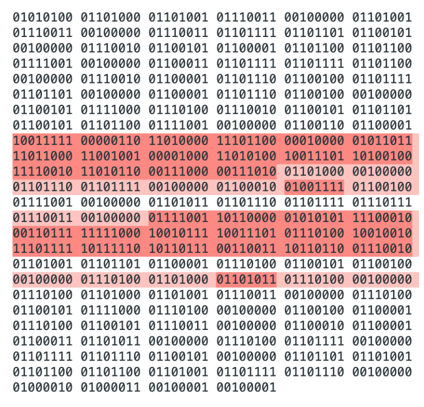

The analysis was done on a text file of size 148 bytes (1184 bits).
The file is encrypted in CBC mode using the following command:
openssl enc -aes-192-cbc -e -in file.txt -out cbc.txt -K `key` -iv `iv`
The figure below shows the modified encrypted file (CBC Mode) in binary after modifying a single bit in the 55th and 90th bytes (modified bits in red):
The file is then decrypted using the following command
openssl enc -aes-192-cbc -d -in cbcModified.txt -out cbcDecrypted.txt -K `key` -iv `iv`
The figure below shows the decrypted file in binary in CBC mode. In total 132 bits were changed among 34 bytes highlighted in dark red.
The figure below shows the decrypted file in binary in ECB mode. In total 131 bits were changed among 32 bytes highlighted in dark red. The encryption and decryption commands above are used for the rest of the modes, substituting CBC with the corresponding mode.
The figure below shows the decrypted file in binary in CFB mode. In total 132 bits were changed among 36 bytes highlighted in dark red.
The figure below shows the decrypted file in binary in ECB mode. In total 2 bits were changed among 2 bytes highlighted in dark red.
The table above summarizes the results. It is clear that OFB causes the least change in the decrypted files. Precisely, only the changed bits before decryption are the changed bits after decryption. This is expected because OFB works like a stream cipher where ciphertext bit error does not propagate.
The change in CFB, CBC and ECB are close, but CFB has caused the most change with 36 bytes. Both CFB and CBC has caused changed across 4 blocks. This was expected since in both modes the nth cipher block depends on the n-1th cipher block. The amount of change caused in ECB is similar to CFB and CBC, only one bit and few bytes less. However, the difference is that change happened in 2 blocks only. This is due to C.n = Enc(P.n), where C.n is the nth cipher block, and P.n is the nth plaintext block. It can be noticed that every single byte of these 2 blocks was changed unlike CFB and CBC where the change was across 4 different blocks.
It can be noticed also that in CBC, the blocks where the bits were changed, caused every byte in that block to change, and only one byte in the following block to change. In CFB, almost the opposite of that behaviour, the blocks where the bits were changed caused only 1 or 2 bytes to change in that block, and every single byte to change in the following block. The above difference between CBC and CFB is because where the XORing is happening:
CBC: C.n = Enc(P.n⊕C.n-1)
In CBC we XOR before encryption.
CFB: C.n = Enc(C.n-1) ⊕ P.n
In CFB we XOR after encryption